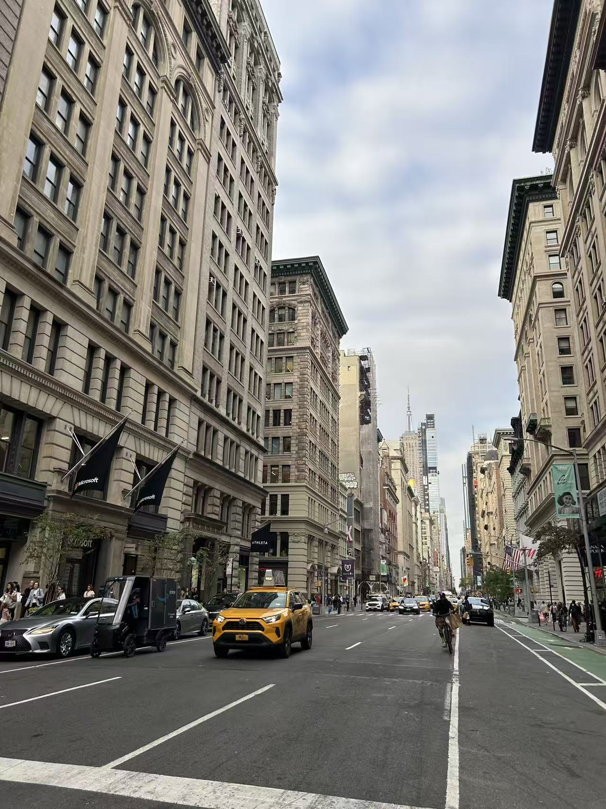
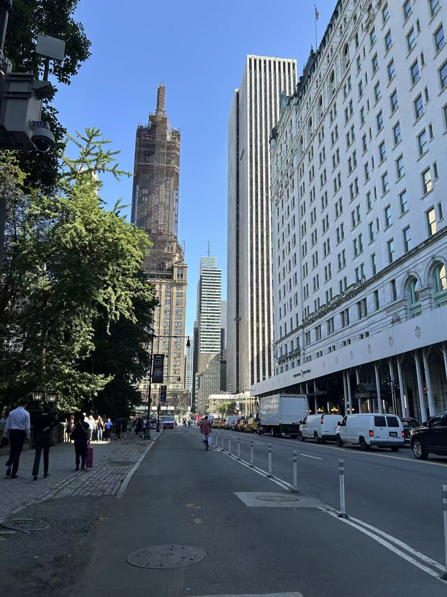
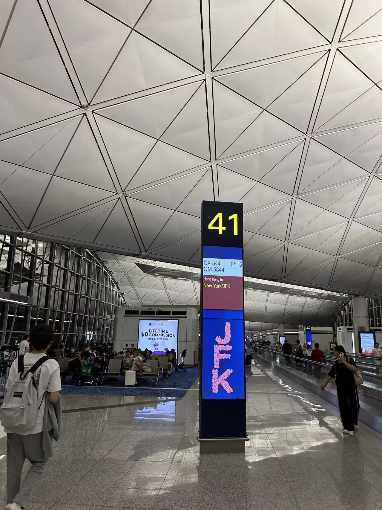
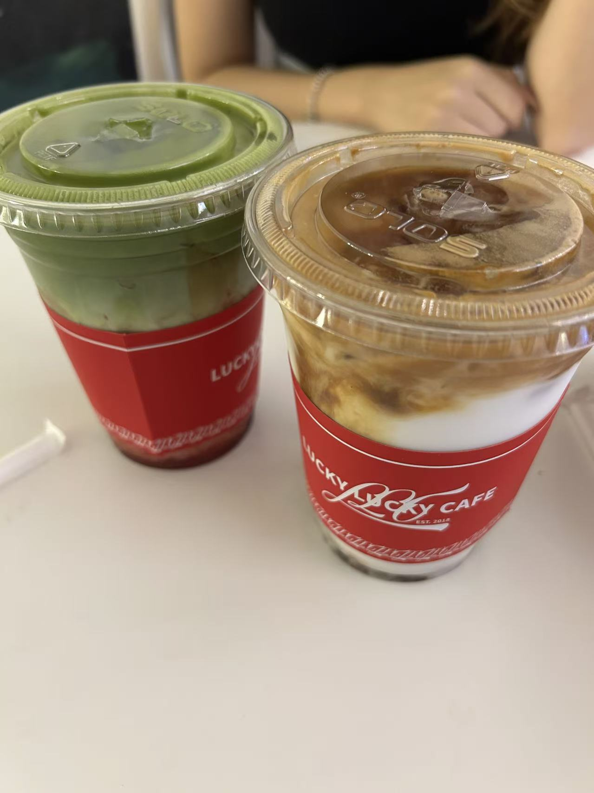
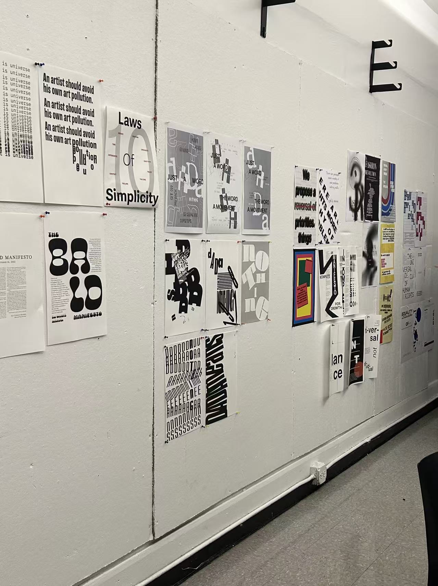
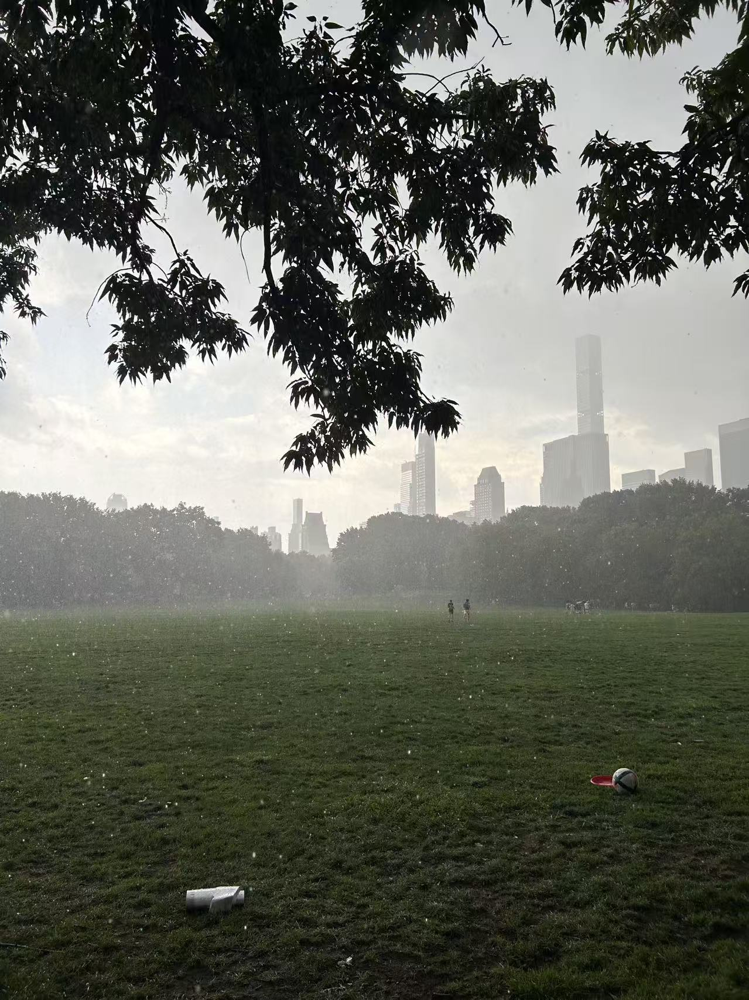
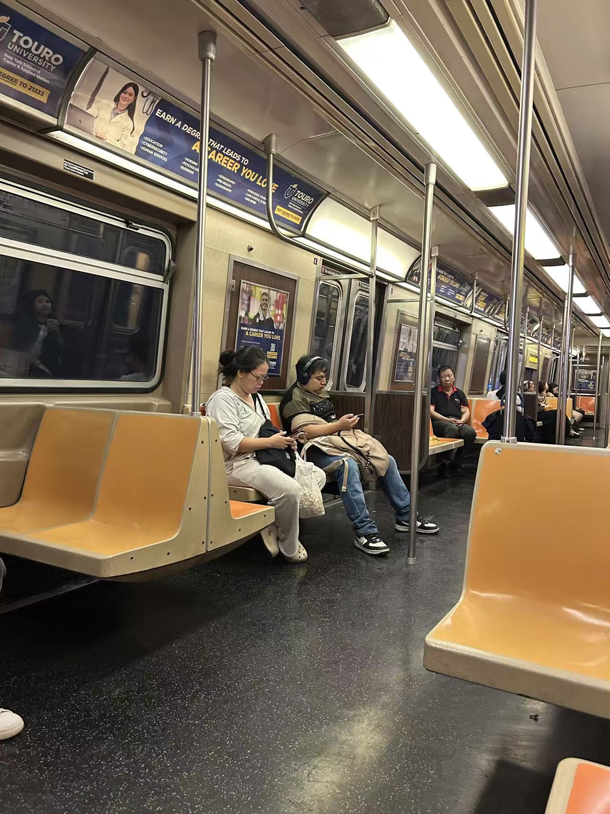

Entry 5 — Photo Dump
A quiet collection of unplanned moments — studio lights, reflections, screens, sky, movement and stillness. These fragments don’t demand explanations; together they form a rhythm I live in.






